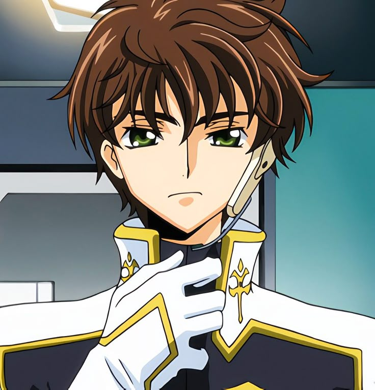

Characters
Lelouch Lamoerouge

A brilliant and strategic student who secretly leads a rebellion against the Britannian Empire under the identity Zero. After gaining the supernatural power called Geass, which allows him to command anyone to obey him once, Lelouch begins a complex plan to destroy the empire and create a better world for his sister.
C.C.
A mysterious immortal girl who grants Lelouch the power of Geass. She has lived for centuries and carries many secrets about the Geass power. Though initially cold and distant, she becomes Lelouch’s closest ally and confidant throughout the story.
Shirley Fennet
A kind and cheerful student at Ashford Academy and a close friend of Lelouch. Shirley deeply cares for him and eventually develops romantic feelings for him. Her life becomes tragic when she gets caught in the consequences of Lelouch’s secret rebellion.
Schneizel El Brittannia.

Schneizel el Britannia is the Second Prince of the Britannian Empire in Code Geass. He is known for his calm personality, sharp intellect, and exceptional strategic thinking, often rivaling the brilliance of Lelouch Lamperouge. Unlike many members of the royal family, Schneizel appears polite and reasonable, but he is extremely calculating and willing to manipulate people or events to achieve his goals.
Suzaku Kururugi

Lelouch’s childhood friend who believes the system should be changed from within rather than through rebellion. He becomes a highly skilled Knightmare Frame pilot for Britannia. Suzaku and Lelouch share a complicated relationship, often standing on opposite sides despite caring deeply about each other.